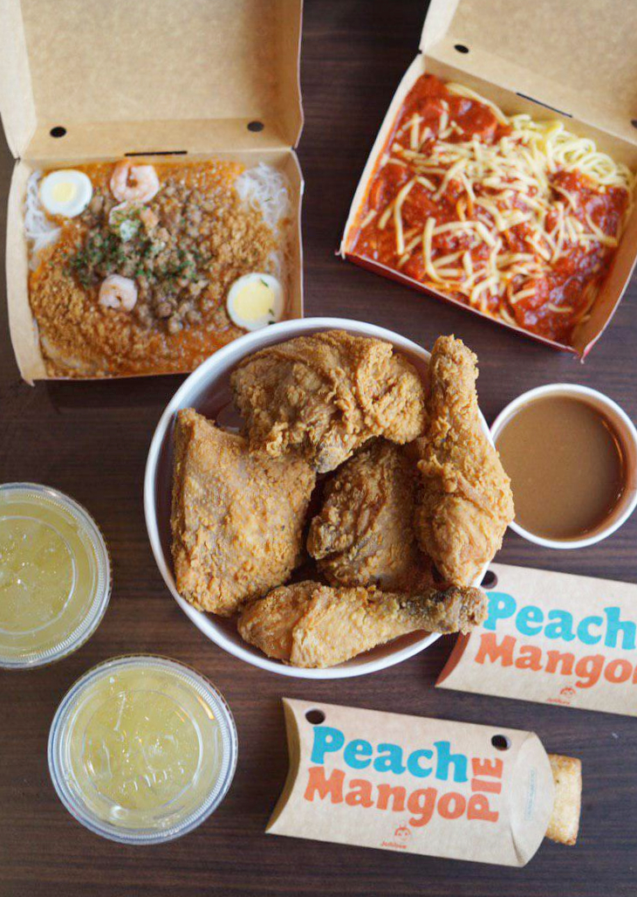

Overwatch 2 is a free-to-play shooter featuring 30+ epic heroes, each with game-changing abilities. Choose your hero, group up with your friends and battle across all-new maps and modes in the ultimate team-based shooter. My favourite heroes in Overwatch 2 include:
Badminton is a racquet sport played using racquets to hit a shuttlecock across a net. Although it may be played with larger teams, the most common forms of the game are "singles" and "doubles".

Jollibee's fried chicken is a unique and beloved dish, known for its perfectly crispy exterior and juicy meat inside. The seasoning and batter give the chicken a flavor that is both savory and slightly sweet, making it a favorite among fans of fast food chicken.
